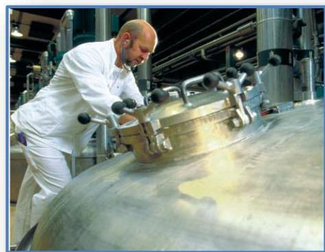
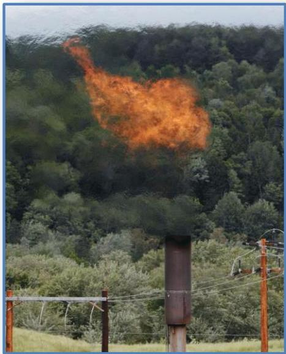
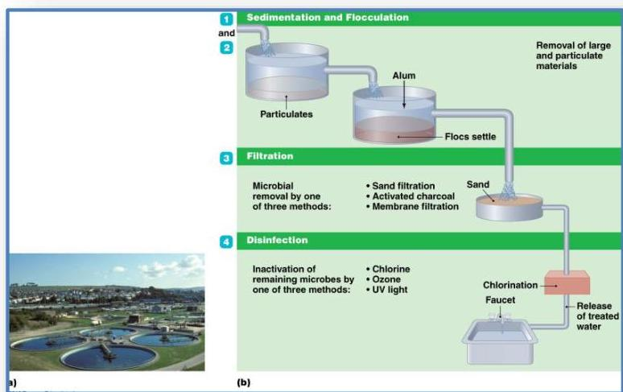
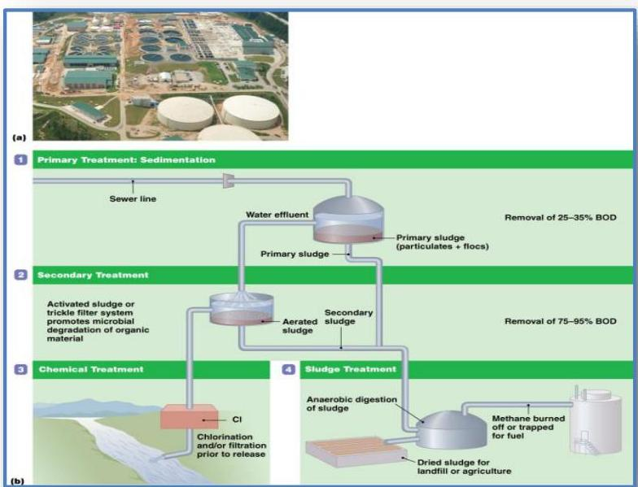

🏭
Topic 10
Introduction to Industrial Microbiology
- Important field within the microbiological sciences
- Industrial microbiology used in various applications
- Microbes in fermentation
- Microbes in the production of several industrial products
- Treatment of water and wastewaters
- Disposal and cleanup of biological wastes
- Treatment of mine drainage
The Roles of Microbes in Industrial Fermentations
- Industrial fermentations
- Large-scale growth of particular microbes for producing beneficial compounds
- Examples include amino acids and vitamins
1. Primary metabolites
- Produced during active growth and metabolism
- Required for reproduction or are by-products of metabolism
2. Secondary metabolites
- Produced after the culture has entered stationary growth
- Substances are not immediately needed for growth

Fermentation vats
Industrial Products of Microorganisms
-
Enzymes and other industrial products
Microbial products used as food additives and supplements including vitamins, amino acids, organic acids, dyes -
Alternative fuels:
- Some microbes produce carbohydrates used as fuels
- Other microbes convert biomass into renewable fuels
 -
Pharmaceuticals:
Includes antimicrobials, recombinant hormones, and other cell regulators -
Pesticides and agricultural products: Microbes used to help crop management
-
Biosensors and bioreporters
- Use of microorganisms to solve environmental problems
- Biosensors: Bacteria or microbial products combined with electronic measuring devices
- Bioreporters: Composed of microbes with innate signaling capabilities
6. Water Treatment
- Wastewater: Water that leaves homes or businesses after use
- Wastewater contains a variety of contaminants
- Treatment intended to remove or reduce contaminants
- Processed to reduce the biochemical oxygen demand (BOD)
- Oxygen needed by aerobic bacteria to metabolize wastes
- Levels reduced so unable to support microbial growth

Treatment of drinking water-overview

Traditional sewage treatment-overview
Knowledge Check
Test Your Understanding
Complete this quiz to assess your comprehension of Industrial Microbiology.
Loading quiz...